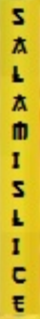

"Look closely" var bogstaveligt — zip-passwordet er malet ind i et billede.
tshark -r trace.pcap --export-objects http,out # 5 JPG'er + secret.zip (ZipCrypto)
# "look closely" = kig VISUELT på billederne; passwordet står på hyperreality_wormhole.jpg
unzip -P SALAMISLICE secret.zip # -> secret.txt = flagetFælde: pcap'en har også en iøjnefaldende 1-byte "I/M" covert-kanal — det er en afledning; den koder ikke passwordet. Se på billederne FØR du dykker i pakke-niveau.
Zip-password SALAMISLICE → flag HKN{4n-0p3n-d00r}.

hyperreality_wormhole.jpg: zip-passwordet SALAMISLICE er malet lodret ind på et af de gule skilte i Chinatown-fotoet — nemt at overse, derfor "look closely".--export-objects http henter exfiltrerede filer ud af en pcap.To tilbagevendende pointer. (1) En pcap er ikke kun pakker: --export-objects http
(eller Wiresharks "Export Objects") rekonstruerer hele filer der blev overført, så du kan åbne dem
direkte. (2) "Look closely" og lignende hints er tit bogstavelige: kig på de ekstraherede billeder
MED ØJNENE, zoom ind på svag eller lodret tekst, før du dykker i pakke-niveau. Og vær på vagt over
for iøjnefaldende "covert channels" der viser sig at være afledninger, det flashede spor er ikke
altid det rigtige.